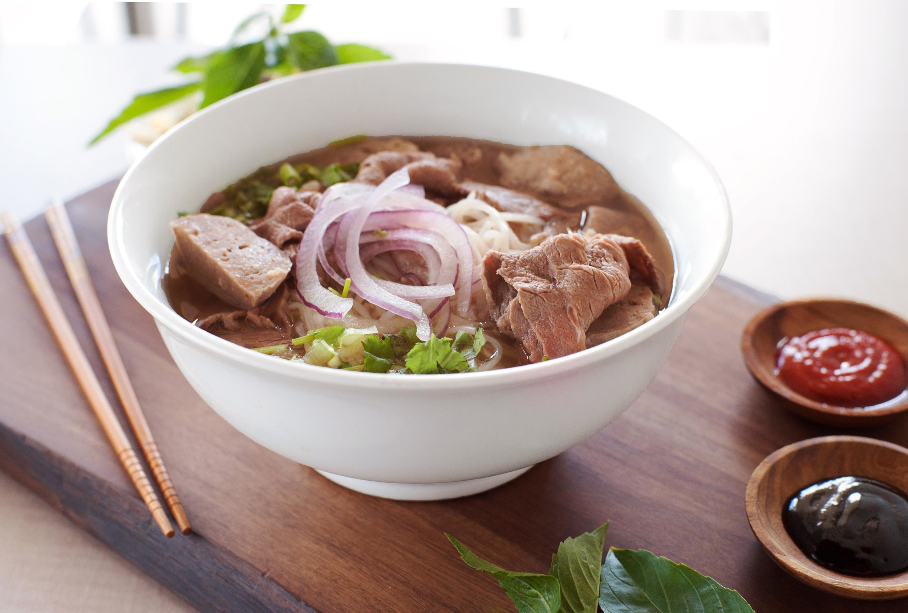

Pho

Description
Authentic Vietnamese pho in all its glory!
Ingredients
- 2 Yellow onions, split in half
- 1 large hand ginger (~6" long), split in half lengthwise
- 3lbs Beef bones
- 2lbs Short rib
- 2-3lbs slow cooking cut of meat (chuck, brisket, etc)
- 5 Star anise pods
- 1 Cinnamon stick
- 1.5t fennel seeds
- 6 Cloves
- 1t Coriander seeds
- 1 pod black cardamon
- 1/2c Fish sauce
- 2T Yellow rock sugar
- 2 Packages pho noodles
- 1lb thinly sliced steak
- 1 bundle green onion
- 1 package pho meatballs
- 1 Small white onion
- 1 lime cut into four wedges
- Hoisin sauce
- Sriracha
- Bean Sprouts (optional)
- Jalapeno (optional)
- Cilantro (optional)
- Basil (optional)
Steps
- Split 2 onions and ginger into halves down the side length wise.
- Cut the slow cooking meat into about 1-1.5 pounds chunks
- Put bones and shortrib into pot and cover with water. Bring to boil over high heat and
boil for 15 minutes. There will a bunch of shit and smeckus that floats out of the bones.
This is just to purge that gross stuff out of your soup. Skim the smeckus off as it boils.
Dump the bones and shortrib into a colander and rise the smeckus off.
- Return the bones and shortrib to the pot. Add the chunks of meat and the split onions and
ginger. Fill it with water to cover. Add the sugar and the salt to the pot. Turn to high
heat till it starts to boil, reduce heat to just barely simmering.
- Cover and simmer for 3 hours. While it is simmering fat will render to the top, skim the
fat off the top with a ladle, careful not to take any broth. Don’t skim all of the fat, you
want some there for your broth but there will be way to much if left alone. (Its bomb beef
tallow if you want to save it for cooking later) After 3 hours pull the chunks of meat and
short ribs out and check if tender. If not put them back in and check ever 30 mins. Put
the bones of the short rib back into the pot after you pull the meat out. Keep simmering
the pho
- Put the star anise, cinnamon stick, fennel seeds, cloves, coriander seeds, and black
caradmon into a spice bag and put it into the pot. Add the fish sauce to the pot. Cover pot
and simmer for another 3-5 hours. Taste the pho and add additional fish sauce, salt,
and/or sugar to taste.
- Another thing you can do is leave the pot uncovered so the broth reduces as its
simmers, this works best but add more water if you feel like its reduced too much.
- Pull out the bones, onion, ginger, and spice pouch so it is just the broth. Broth can be
made a day in advance if desired, just chill broth and reheat to boiling.
- When ready to serve. Split the pho meatballs and add to pot to warm up. Slice the raw
steak thinly. Slice all the garnishes. Slice the cooked shortrib and meat chunks into
servings Brings a separate pot of water up to boil and boil the pho noodles per the
instructions on the bag.
- Turn the heat up and get the pho broth up to boiling. Put the cooked noodles into a bowl.
Add the desired garnish and meats. Separate out a serving of the raw thinly sliced steak
and dip into the boiling pho broth for a few seconds to precook it. Put the steak on top of
the noodles and ladle on the hot pho broth to finish cooking the rare steak.